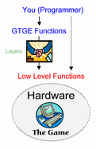

|
GOLDEN T GAME ENGINE
Game Programming for Java Programmer
Welcome to Golden T Game Engine (GTGE) Tutorial
Introduction
Golden T Game Engine (GTGE) is a 2D Game Library / Game SDK (Software Development Kit) to create a high quality game in no time.
GTGE is a pack of Java API (Java library), means you will use Java programming language to create a game with GTGE.
GTGE is a high level interface library, means programmer no need to worry about low level routines anymore. GTGE try to hide (but not lock) those low level routines by placing some layers, thus making the call to those low level routines as easy as possible. GTGE give programmer a direct access to those low level functions in the easiest way.
We focus to create a game engine that really easy to use yet flexible and robust enough to create any type of games.
In short, GTGE is a collection of ready-to-use functions for making games, such as functions to draw to the screen, keyboard and mouse polling, playing sound or music, etc. These functions that is called as Game Engine.
GTGE features could be seen (listed) on GTGE index page :
http://www.goldenstudios.or.id/products/GTGE/
And be sure to read GTGE design standard to understand our goal :
http://www.goldenstudios.or.id/products/GTGE/designstandard.php
Still not convinced to use GTGE? Have a question that you need to know and understand before decide to use GTGE or not?
You can ask it in our guest room.
Download
All GTGE components (library, documentation, tutorial) are bundled into one ZIP file that available to download at :
[to download the latest GTGE version, please visit GTGE official site http://www.goldenstudios.or.id]
Use ZIP archive extractor such as WinZip to unpack the content of the zip file into a folder.
The created directory structure is as following :
| [unpack_dir] |
|
|
|
|
\ [GTGE] |
|
|
|
|
\ golden_x_x_x.jar |
: GTGE library |
|
|
\ CHANGELOG.html |
: GTGE change log |
|
|
\ [docs] |
: GTGE API documentation |
|
|
\ [tutorials] |
: this tutorial |
|
|
\ [src] |
: source code example of this tutorial |
whereas:
[xxx] = directory
xxx = file
And to unleash all GTGE features (OpenGL renderer, MP3 and OGG player, etc) download GTGE add-ons at :
http://www.goldenstudios.or.id/products/utilities/
Golden T Game Engine (GTGE) Tutorial
A few notes before you read this tutorial :
- This tutorial is divided into chapters, each chapter consist of preface, content, summary, and reference.
- The preface contains what is the chapter about and the objective of the chapter.
- The content covers the chapter in detail.
- The summary contains the conclusion of the chapter.
- The reference contains several links related with the chapter (links will be opened in new window).
- And there is also books/relevant links related with the chapter's topic placed above the reference part
(this part is only visible if your computer is connected to the internet).
- If you read this tutorial offline (you read this from downloaded tutorial), every links in this tutorial will try to open it by offline too whenever possible.
For example links to GTGE API documentation will be read relatively from this tutorial directory (../[docs]), while link to Java homepage will be opened directly from Java website.
- Almost all chapters provide a source code example that placed under [src] directory.
Other notes :
- This tutorial (all contents) is intended for novice/newbie that new to Java programming language or even new to programming field.
- For anyone that has a sufficient understanding about Java, you can skip the content part and read only the preface and summary part, and take a look the source code examples (the content part is only for newbie).
- For the expert one (has done some Java assignment before), you likely can understand how GTGE works only by looking the tutorial source code examples, the source code comes with complete comments to understand it, but still we recommend to read the preface and the summary part of this tutorial.
Golden T Game Engine (GTGE) Tutorial Chapters
This tutorial consists of 12 chapters :
- Preface (this chapter)
Covers about GTGE and all things needed to start using GTGE.
- Installation
Things needed to be set in order to run GTGE.
- GTGE API Overview
GTGE API overview.
- Starting the Game
The first code with GTGE.
- Choosing Game Environment
Picking the game environment, from windowed, fullscreen, or applet mode (game that embedded in a webpage).
- Revealing the Engines Ability
Covers all GTGE game engines and how to use it.
The first six chapters is the tutorial part one, we call it "Foundation Tutorial". Called foundation because the game engine (the core of GTGE) and the basic of how to use GTGE has been explained completely in these 6 chapters. Only by understanding this part, you have able to create game because you already have the engines (the basic equipment) needed to create the game in these 6 chapters.
The next six chapters is GTGE solution to handle objects in game (sprite, background, collision), in game terminology it's called as sprite management and we call this part as "Game Objects Tutorial". This part is optional, but by mastering this part, your game development will be much easier!
- Sprite
Explain what is sprite and how to use it.
- Background
How to use background in your game.
- Grouping Your Sprites
Grouping sprites that have common behaviour.
- Missing Some Collisions!?
How to use built-in collision system in GTGE.
- Its Play Time!
Automate the game by placing all game objects into a playfield.
- End of Tutorial??
Other IMPORTANT things need to be understand.
Tutorial 1
PREFACE
This block part contains the overview of the chapter.
This preface chapter will covers all things needed to start using GTGE, from downloading Java SDK, installation, setting, and the basic programming knowledge needed to use GTGE.
Objective : Understand what is required to use GTGE.
There are two things (only one is required) needed in order to use GTGE :
- Java SDK (Software Development Kit) version 1.4 or later.
Because GTGE is built on top of Java programming language, or for exactly you will use Java to create game by using GTGE library, thus you need Java SDK to create Java application.
Java SDK can be downloaded freely from http://java.sun.com/j2se/.
Java Installation: after Java SDK has been downloaded and installed (by running the auto installer), the next thing to do is setting system path and classpath.
Click Windows [start] menu (left bottom of your screen), open [run], then type "sysedit" to edit autoexec.bat file (start -> run -> type "sysedit").
Add this line at the bottom of the autoexec.bat :
file :: autoexec.bat
PATH=[java_installed_dir]\BIN;%PATH%
SET CLASSPATH=[java_installed_dir]\LIB\TOOLS.JAR;.;%CLASSPATH%
whereas :
[java_installed_dir] = directory where you install Java
%PATH%, %CLASSPATH% = system path, classpath the system has previously
For example:
Java is installed on c:\j2sdk1.4.1
PATH=C:\J2SDK1.4.1\BIN;%PATH%
SET CLASSPATH=C:\J2SDK1.4.1\LIB\TOOLS.JAR;.;%CLASSPATH%
- Java IDE (Integrated Development Environment).
For saving you lots time and troubles, we recommend you to take an IDE to work with, but this is optional, you could still type and edit Java source code by using any text editor such as NotePad or TextPad.
For a decent Java IDE, we recommend GEL (http://www.gexperts.com/) a light, fast, native executable Java IDE for Windows OS.
Troubles installing Java SDK? Ask it in our dedicated forum.
Any questions related with Java, GTGE, and specific to your game can be asked there. We will do our best to answer any questions!
And all questions will be likely to get answered within a day (24 hours).
After you have met all things needed to run Java/GTGE, you need at least these 2 basic knowledges to be able to use GTGE library :
- Java Programming Language Syntax.
Tutorial for Java Syntax is under construction, visit our forum to see the newest update.
- Object Oriented Programming (OOP) in Java.
Tutorial for Java OOP is under construction, visit our forum to see the newest update.
Summary :
- GTGE is a Java library to create 2D game.
- In order to run GTGE you need at least Java SDK and Java IDE optionally.
- In order to use GTGE you need to understand Java Syntax and Object Oriented Programming (OOP).
Reference : Java Download,
Java Installation,
Java Documentation,
Java Tutorial,
GEL Java IDE
| |